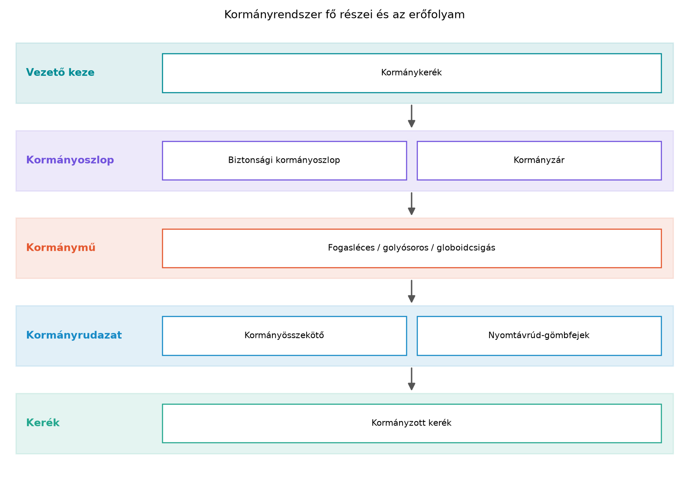

A műhelyben gyakori ügyfélpanasz: „a kormány bizonytalan, kopog, a kormánykeréken van egy holtjátékszakasz, amíg a kerék nem reagál.” Ilyenkor a hibát nem a kormánykerék alatt, hanem a kormányláncban kell megkeresni. Ha vakon csak a kormánykerék rögzítését húzzuk meg, a kormányberendezés kopott gömbfeje később balesetet okozhat. Ebben az alfejezetben a kormánymű fajtáit, a rudazat felépítését és a holtjáték okait tanuljuk meg úgy, hogy a karbantartáskor és a műszaki vizsga előtt célzottan tudjunk ellenőrizni.
A kormányzási lánc a vezető kezétől a kormányzott kerékig halad. Először a kormánykereket fordítjuk, a mozgás a kormányoszloppal a kormányműbe jut, onnan a kormányrudazat a kerekeket téríti ki. Az alábbi vázlat a fő részeket és az erőfolyam irányát mutatja.

A rajz rétegei felülről lefelé olvashatók: a kormánykerék az oszlopon keresztül hajtja a kormányművet, amely a rudazatot mozgatja, a rudazat pedig a kormányzott kereket. A kormányzár a kormányoszlopba építve reteszel, a biztonsági kormányoszlop ütközéskor elnyeli az energiát.
Definíció. A kormánymű a kormányoszlop forgómozgását a kormányzott kerekek elfordításához szükséges rudazati mozgássá alakító, áttételes szerkezet. Feladata a kormányzási nyomaték növelése és a kerék elfordulásának a kormánykerék elfordulásához viszonyított áttételezése.
Definíció. A kormányrudazat a kormányműtől a kormányzott kerékig húzódó rudak és gömbcsuklók összessége, amely a mozgást átviszi, és megvalósítja a kormánytrapézt, hogy a belső és a külső kerék eltérő szögben forduljon el.
Definíció. A gömbfej (tie rod end) a kormányrudazat és a tengelycsonk kormánykarja közötti gömbcsuklós csatlakozó. Szögelfordulás közben is erőzáró kapcsolatot tart, de kopáskor radiális játék keletkezik benne.
Összefüggés. Az átlagos kormányáttétel a kormánykerék elfordulási szöge és a kormányzott kerék átlagos elfordulási szöge hányadosa:
Személyautóknál a fogasléces kormányművel jellemzően (ellenőrizendő: gyártói adat). A kormányáttétel nem mindig állandó – a fogasléc változó osztású fogazása vagy a karos geometria miatt középpontban és szélső helyzetben eltérhet.
A mai személyautók leggyakoribb megoldása. A kormányoszlop végén lévő fogaskerék egy fogasléccel kapcsolódik. A kormánykerék elfordításakor a fogaskerék forgása a fogaslécet oldalirányban tolja. A fogasléc két vége belső kormányösszekötő rudakkal (axiális csuklóval a fogaslécen), majd külső kormányösszekötő-gömbfejekkel csatlakozik a tengelycsonk kormánykarjához. Előnye a kis szerkezeti tömeg, a kevés csukló és a pontos, közvetlen kormányérzet. Hátránya, hogy a fogasléc és a fogaskerék kopása holtjátékot okozhat, és a szerkezet érzékeny a porvédő sérüléseire.
Az ábrán a bemenő tengely (1) fogaskereke (2) a fogaslécet (3) oldalirányban tolja; a nyomóbetét (4) rugója a fogaslécet a fogaskerékhez szorítja. A ház (5) gumiágyazású bakokon ül, a fogasléc végeit porvédő harang (6) védi. A belső axiális gömbcsuklóhoz (7) csatlakozó kormányösszekötő (8) menetes végén az ellenanya (9) és a külső gömbfej (10) van, amely a kormánykarhoz (11) kapcsolódik. A HTML-kiadásban a kormány balra–jobbra fordítható, és rámutatásra megjelenik az alkatrész neve és tipikus kopási helye.
Régi személyautókon és nagyobb, merev hidas haszongépjárműveken találkozunk vele. A kormánytengely golyós csavartekercse egy szektorral vagy anyával kapcsolódik, a golyók a csavar és az anya közötti zárt pályán cirkulálnak, csökkentve a súrlódást. A forgó csavar az anyát elmozdítja, az anya fogazata pedig a kormánykar tengelyét forgatja el. Előnye a nagy áttétel és a nagy teherbírás, hátránya a nagyobb méret, tömeg és a több illesztési pont.
Szintén régebbi megoldás. A kormánytengelyen kialakított globoidcsiga egy görgővel vagy ujjal kapcsolódik, amely a kormánykar tengelyén lévő kart hajtja. A globoidcsiga íves felülete nagyobb fogfelületet ad, de a mai járművekben ritkán fordul elő.
Fogasléces kormányműnél a kormányösszekötő rúd a fogasléc és a kormányösszekötő-gömbfej között helyezkedik el. A külső kormányösszekötő-gömbfej a kormánymozgást a tengelycsonk kormánykarjára viszi; a belső rúd és a gömbfej menetes kapcsolatán állítható az összetartás. A gömbfej a kerék felőli végén lehetővé teszi a kerék elfordulását és a futómű függőleges mozgását.
Merev hidas járműveknél a kormánymű kimenő karja egy középső kormányrudat mozgat, amely a könyökkarral a két oldali kormányrudat hajtja; a két kormánykart összekötő rúd a nyomtávrúd. A kormánytrapéz geometriája biztosítja, hogy az ív belső oldalán futó kerék nagyobb szögben fordul el, mint a külső.
A biztonsági kormányoszlop frontális ütközéskor nem nyomódhat a vezető felé mereven. Jellemző megoldás a perforált, összecsuklódó cső, a teleszkópos kormánytengely vagy az energiaelnyelő oszlopcsukló. A légzsák a kormánykerékben van; a kormányoszlop szerelésekor a pirotechnikai egység biztonsági szabályait is be kell tartani (lásd a Passzív biztonsági elektronika: légzsák és övfeszítő alfejezetet).
A kormányzár a gyújtáskapcsolóval egybeépített mechanikus retesz, amely a kulcs kihúzásakor egy csapot nyom a kormánytengely hornyába, és megakadályozza a kormány elfordítását. Lopásgátló szerepe van. Tilos menet közben a gyújtáskulcsot kihúzni (vagy kulcs nélküli rendszernél a motort leállítva gurulni), mert a kormányzár bereteszelhet, és a kormányzott kerék hirtelen blokkolása balesetet okozhat.
A golyósoros kormányműben a golyók a csigatengely és a kormányanya között keringenek, és a visszavezető csövön át térnek vissza; az anya fogazata a szektorkereket és vele a kormánytőkart forgatja. A globoidcsigás kormányműben a homokóra alakú csiga a görgőt és a kormányrúd-kart mozgatja. A biztonsági kormányoszlop két kardáncsuklóval csatlakozik a kormányműhöz; ütközéskor az összecsúszó elem rövidül. A HTML-kiadásban lépésenként követhető a golyók körforgása és az oszlop ütközés utáni állapota.
Példa. Egy személyautó kormánykereke középállásból az egyik végállásig 1,2 fordulatot tesz meg, a kormányzott kerék átlagos elfordulása 28°. Számítsuk ki az átlagos kormányáttételt.
Adott:
fordulat,
.
Keresett:
.
A kormánykerék szögelfordulása:
A kapott -es átlagos kormányáttétel a fogasléces személyautók tipikus tartományába esik (ellenőrizendő: gyártói adat).
Példa. Fogasléces kormányműben a fogaskerék osztókörátmérője , sugara . Mekkora utat tesz meg a fogasléc, ha a kormánykereket -kal elfordítjuk?
Adott:
,
.
Keresett:
.
A fogasléc elmozdulása:
A fogasléc teljes löketéhez viszonyítva ez az egyirányú 12,6 mm reális. A fogasléces kormányművek fogasléclökete jellemzően 140–180 mm között van (ellenőrizendő: gyártói adat).
A kormányberendezés ellenőrzése először a kormánykerék holtjátékának mérésével kezdődik. A kormánykerék kerületén, középállásban, álló motorral, finoman jobbra-balra mozgatva mérjük az elmozdulást addig, amíg a kerék nem reagál. Példaként a gyártó 0–10 mm közötti kerületi holtjátékot engedhet meg (ellenőrizendő: gyártói adat). Ha nagyobb, a hiba a kormányoszlop csuklójában, a kormányműben vagy a rudazat gömbfejeiben lehet.
A gömbfejek ellenőrzéséhez emeljük meg a járművet, és csak bakra támasztva dolgozzunk. A kereket a 6 és a 12 óra irányban, illetve a 3 és a 9 óra irányban mozgatva érzékelhető radiális játékot keresünk. A porvédő gumiharang repedése, zsírvesztése korai csereindok, mert a szennyeződés gyorsítja a gömbfej kopását.
Szabály. A holtjáték hibáját a teljes kormányláncban alulról felfelé keressük, mert a leggyakoribb ok a kormányösszekötő-gömbfej vagy a kormányösszekötő kopott csuklója, nem pedig maga a kormánymű.
A kormányösszekötő, a gömbfej, a nyomtávrúd vagy a kormánymű cseréjének előkészítésekor mindig a gyártói javítási utasítást követjük.
A helyes képen a csavaros leválasztó villája a kormánykaron fekszik, a nyomócsavar alulról a csapvégre nyom, és a néhány menettel visszacsavart anya védi a menetet. A hibás képen az éktípusú villa szétszakítja a porvédőt, a kalapácsütés pedig a menetet teszi tönkre. Az alsó sor az 5. lépést mutatja: jelölés és az menethossz mérése, az új gömbfej beállítása ugyanarra az méretre, az ellenanya meghúzása, majd futóműbemérés.
Biztonsági korlát. A feladat tanműhelyi környezetre, oktató felügyeletére és a gyártói javítási utasítás betartására vonatkozik; a megadott értékek tanulási példák.
Környezetvédelem. A kormányműből kiengedett olajat, a zsíros rongyot és a szennyezett gömbfejzsírt zárt, feliratozott edényben gyűjtsük, és veszélyes hulladékként kezeljük a hatályos hulladékgazdálkodási előírások szerint (ellenőrizendő: hulladékrendelet).
Egy személyautó ügyfélpanasza: „kormányzás közben jobb oldalon kopog, és egyenetlen úton a kormány ide-oda ráng.” A mérés a kormánykerék kerületén 35 mm holtjátékot mutat (a gyártó példaértéke szerint 10 mm a felső határ). A jármű alatt, bakon állva a jobb oldali külső kormányösszekötő-gömbfej radiális játéka 2 mm, a bal oldalié 0,3 mm. A jobb oldali gömbfej porvédője elszakadt, a zsír szennyezett. A javítás során a gömbfejet és a porvédőt cseréljük, az új gömbfejet a régi menethosszra állítjuk, meghúzzuk a gyártói nyomatékkal, majd futóműbemérést végzünk. Próbaút után a holtjáték a megengedett tartományba kerül. Később a Szervokormányok: hidraulikus, elektrohidraulikus, elektromechanikus és aktív kormányzás alfejezetben a rásegítő rendszereket is ellenőrizzük.
1. feladat (A) Nevezze meg a három kormányműfajtát, és mondja meg, melyiket használják leggyakrabban a mai személyautókban.
2. feladat (A) Egy fogasléces kormánymű fogaskerekének osztókörsugara 7 mm. Mekkora a fogasléc elmozdulása, ha a kormánykereket 60°-kal elfordítjuk?
3. feladat (B) Egy kormánykerék 2,9 fordulatot tesz meg ütközéstől ütközésig, a kerék összes elkormányzási tartománya 70°. Számítsa ki az átlagos kormányáttételt, és ellenőrizze, hogy a fogasléces személyautó tipikus tartományába esik-e.
4. feladat (B) A fenti rétegábra alapján sorolja fel az erőfolyam sorrendjében a kormányrendszer fő részeit.
5. feladat (C) Hasonlítsa össze a fogasléces és a golyósoros kormányművet tömeg, pontosság, teherbírás és tipikus alkalmazás szerint. Ez az összehasonlítás készíti elő a Szervokormányok: hidraulikus, elektrohidraulikus, elektromechanikus és aktív kormányzás alfejezetet.
6. feladat (D) Ügyfélpanasz: „a kormánykeréken 20 mm-es holtjáték van, és balra húz a kocsi.” Mérés: bal oldali külső kormányösszekötő-gömbfej radiális játéka 1,5 mm, jobb oldali 0,5 mm. A kormánymű csatlakozásai feszesek. Milyen okot valószínűsít, milyen javítást tervez, és milyen ellenőrzést végez a javítás után?
Önellenőrzés – válaszok
1. feladat – megoldás
Fogasléces, golyósoros és globoidcsigás kormánymű. A mai személyautókban a fogasléces a leggyakoribb.
2. feladat – megoldás
Adott:
,
.
Keresett:
.
A fogasléc elmozdulása 7,33 mm.
3. feladat – megoldás
Adott:
fordulat összesen két irányba, a kerék összes elfordulása
.
A kormánykerék teljes elfordulása ütközéstől ütközésig:
Ez az érték a személyautók tipikus 14–18 közötti fogasléces tartományába esik (ellenőrizendő: gyártói adat).
4. feladat – megoldás
A rétegek sorrendjében: kormánykerék → biztonsági kormányoszlop és kormányzár → kormánymű (fogasléces, golyósoros vagy globoidcsigás) → kormányrudazat (kormányösszekötő, kormányösszekötő-gömbfejek) → kormányzott kerék.
5. feladat – megoldás
A fogasléces kormánymű kis tömegű, kevés csuklót tartalmaz, közvetlen és pontos kormányérzetet ad, de kisebb teherbírású; ezért személyautókon és könnyű haszongépjárműveken használják. A golyósoros kormánymű nagyobb méretű és tömegű, több illesztési ponttal, de nagy áttételt és nagy teherbírást biztosít; merev hidas, nagyobb járműveken alkalmazható. Ez a különbség azért fontos, mert a Szervokormányok: hidraulikus, elektrohidraulikus, elektromechanikus és aktív kormányzás alfejezetben a szervokormány rásegítő rendszereit is ezekhez a kormányműtípusokhoz kell illeszteni.
6. feladat – megoldás
A tünet és a mérés alapján a bal oldali külső kormányösszekötő-gömbfej kopott (1,5 mm radiális játék a megengedettnél nagyobb, a gyártói példaérték szerint). A kormánymű feszes, így a holtjáték oka a gömbfejben van. A javítás: a bal oldali gömbfej és szükség szerint a porvédő cseréje, a gömbfejet a régi menethosszra állítani, meghúzás gyártói nyomatékkal. A balra húzást a gömbfej kopása önmagában ritkán okozza; a futóműbemérésnél az összetartást, dőlést, utánfutást, továbbá az abroncsnyomást és a fékeket is ellenőrizni kell. A javítás után futóműbemérést végzünk, próbaúton ellenőrizzük a holtjátékot és a kormány középállását.
A kormánymű a kormánykerék forgómozgását a kormányzott kerekek elfordításához szükséges rudazati mozgássá alakítja. A három alaptípus a fogasléces, a golyósoros és a globoidcsigás kormánymű; a mai személyautókban a fogasléces a meghatározó. A kormányrudazat részei a kormányösszekötő, a nyomtávrúd és a gömbfejek, amelyek a kormánytrapézt is megvalósítják. A kormánykerék holtjátékát a teljes láncban mérjük, és alulról felfelé keressük az okot, mert a leggyakoribb hiba a gömbfej kopása. A gömbfej és a kormányösszekötő/nyomtávrúd csere után futóműbemérés szükséges. A biztonsági kormányoszlop ütközéskor elnyeli az energiát, a kormányzár lopásgátló reteszként működik. Továbbvitt eredmény: a kormánymű és a rudazat ismerete szükséges a Szervokormányok: hidraulikus, elektrohidraulikus, elektromechanikus és aktív kormányzás alfejezetben, ahol a rásegítő rendszerek működését és diagnosztikáját ezekre építjük.